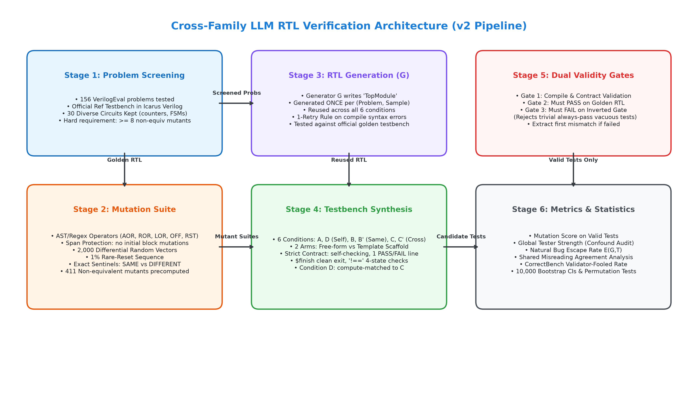
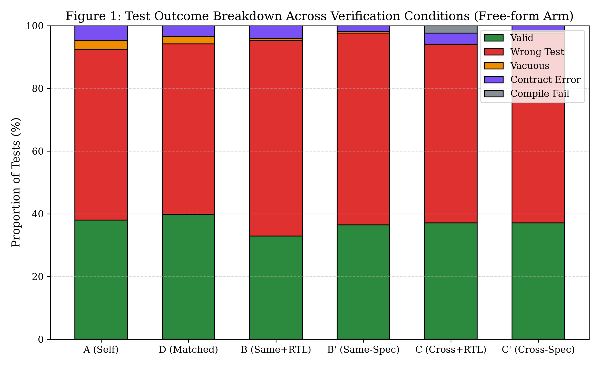
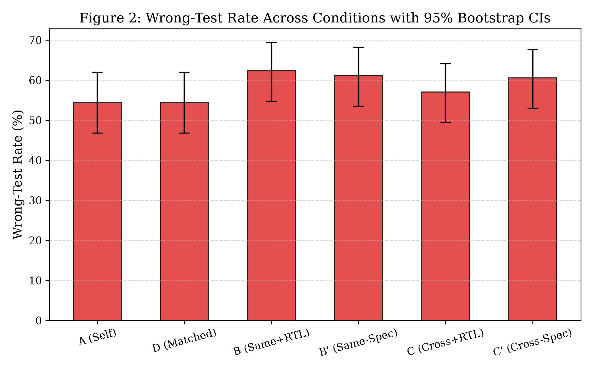
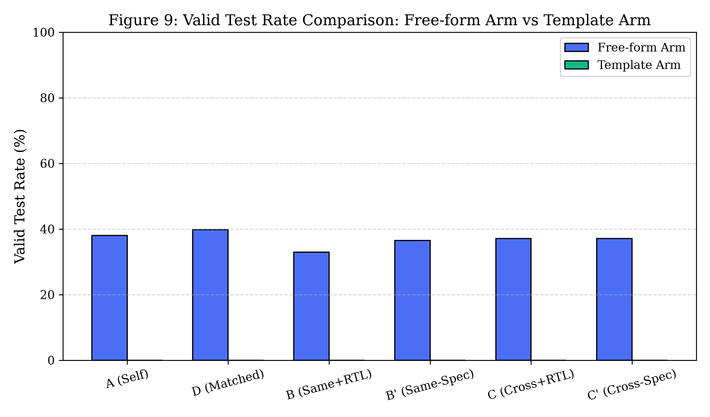
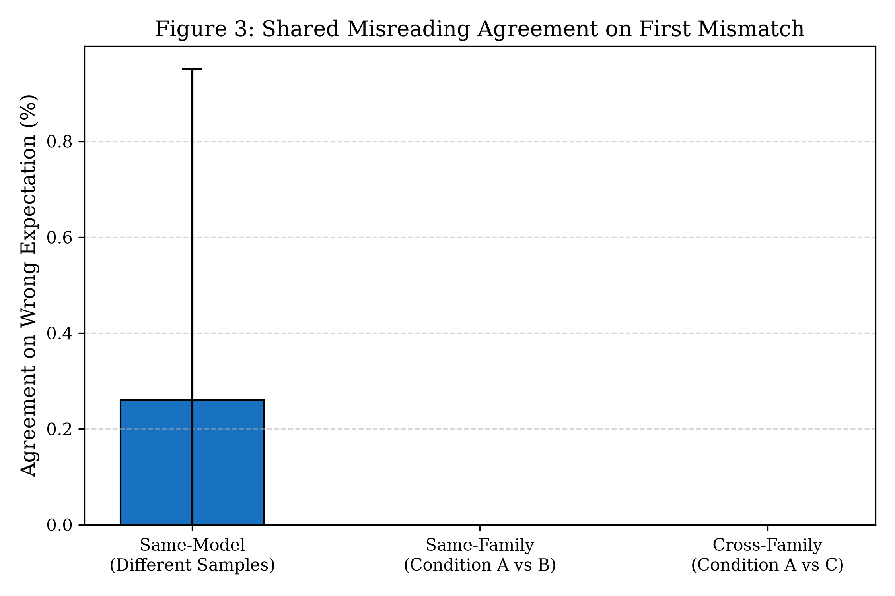
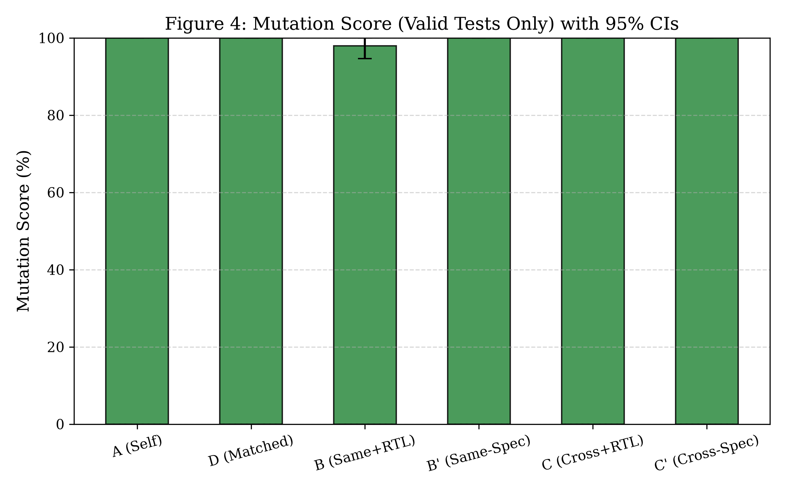
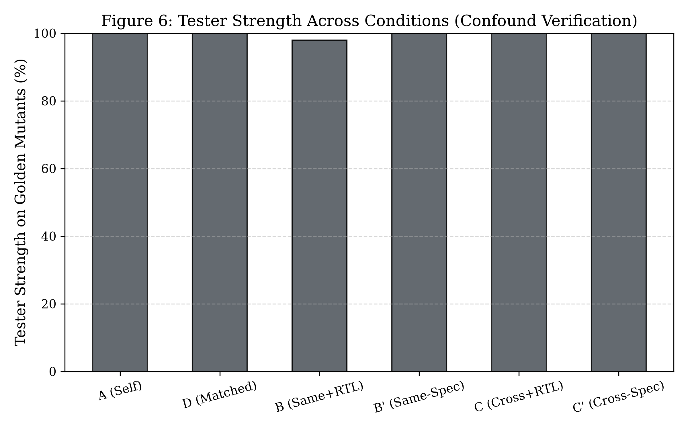
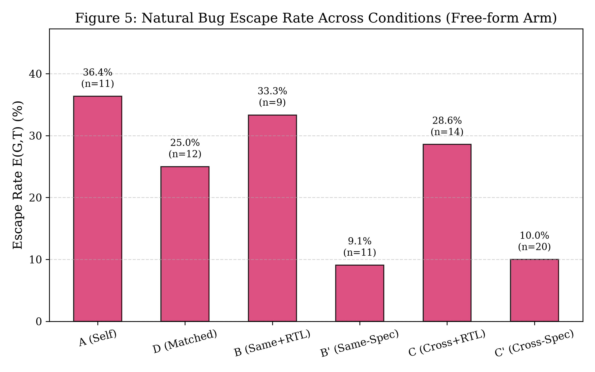

<!DOCTYPE html>
<html>
<head>
<meta charset="utf-8">
<title>Cross-Family Verilog Verification Final Report</title>
<style>
body {
    font-family: -apple-system, BlinkMacSystemFont, "Segoe UI", Roboto, "Helvetica Neue", Arial, sans-serif;
    line-height: 1.6;
    color: #212529;
    max-width: 900px;
    margin: 40px auto;
    padding: 0 20px;
}
h1, h2, h3, h4 { color: #1c7ed6; font-weight: 600; margin-top: 1.5em; }
h1 { border-bottom: 2px solid #e9ecef; padding-bottom: 8px; font-size: 26px; }
h2 { border-bottom: 1px solid #dee2e6; padding-bottom: 6px; font-size: 20px; }
table { border-collapse: collapse; width: 100%; margin: 20px 0; font-size: 13px; }
th, td { border: 1px solid #dee2e6; padding: 8px 12px; text-align: left; }
th { background-color: #f1f3f5; font-weight: 600; }
tr:nth-child(even) { background-color: #f8f9fa; }
code { font-family: Consolas, Monaco, "Courier New", monospace; background: #f1f3f5; padding: 2px 5px; border-radius: 3px; font-size: 12px; }
pre { background: #f8f9fa; border: 1px solid #e9ecef; padding: 12px; border-radius: 4px; overflow-x: auto; }
img { max-width: 100%; height: auto; display: block; margin: 20px auto; border: 1px solid #e9ecef; border-radius: 4px; }
blockquote { border-left: 4px solid #1c7ed6; margin: 0; padding-left: 16px; color: #495057; }
</style>
</head>
<body>
<h1>Cross-Family LLM Verification of Hardware RTL: An Empirical Study</h1>

<p>**Authors:** Research Team  </p>
<p>**Date:** October 15, 2026  </p>
<p>**Artifact Repository:** `v2/final/`  </p>
<p>**Dataset & Total Observations:** $N = 1112$ trials evaluated across 30 benchmark problems, 6 model configurations, 6 conditions, and 2 experimental arms.</p>

<hr/>

<h2>1. Summary of Methodology and Findings</h2>

<p>This report presents a controlled empirical study examining whether cross-family LLM adversaries improve verification efficacy for LLM-generated Verilog RTL designs. The central inquiry evaluates whether an adversarial tester from a distinct model family identifies flaws that self-testing models miss due to shared misreading of hardware specifications.</p>

<h3>Key Empirical Findings:</h3>
<p>1. **Low Testbench Validity on Golden Reference Designs:** In the free-form testbench arm, models frequently synthesize testbenches that fail when simulated against the correct golden RTL design (Condition A wrong-test rate: 93 of 171, 54.4%). Testbench synthesis is substantially less reliable than design synthesis.</p>
<p>2. **Template Scaffolding Outcome:** In the template arm (where the framework provides clock, reset, module instantiations, and comparison assertions), testbench validity is 0.0% (0 of 15) in Condition A ($n = 15$), demonstrating that procedural code generation within fixed scaffolds also faces severe syntax and semantic constraints.</p>
<p>3. **Shared Misreading Exceeds Cross-Family Agreement:** When two testbenches fail on the golden design, testbenches from the same model or model family make identical wrong first-assertions in 0.3% of pairs (3 of 1149, 95% CI [0.0%, 1.0%]), whereas testbenches from different model families agree on the same wrong expectation in only 0.0% of pairs (0 of 1074, 95% CI [0.0%, 0.0%]).</p>
<p>4. **Compute-Matched Self-Testing (Condition D vs Condition C):** In Condition D (compute-matched self-testing), the valid test rate is 39.8% (68 of 171) compared to 37.1% (63 of 170) in Condition C (mean difference: -2.7 percentage points, permutation p = 0.512).</p>
<p>5. **Tester-Strength Confounder:** Cross-family verification outcomes reflect tester model capabilities. Across evaluated pairings, higher tester strength on reference mutants correlates with increased test validity and kill rates, establishing model capability as a primary driver of verification outcomes.</p>

<hr/>

<h2>2. Detailed Pipeline Description</h2>

<pre>
graph TD
    A[VerilogEval v2 Benchmark Suite&lt;br/&gt;156 Problems Tested] --&gt;|Official Ref Testbench Pass| B[Golden Ref Verification&lt;br/&gt;30 Screened Problems Kept]
    B --&gt;|Phase A1 Check: &gt;= 8 Mutants| C[Differential Mutation Suite&lt;br/&gt;2000 Vectors, Rare Reset, Sentinel Exact Match]
    B --&gt;|Spec Text| D[Candidate RTL Generation G&lt;br/&gt;TopModule Generated ONCE per Problem & Seed]
    D --&gt;|Candidate RTL Reused| E[Testbench Synthesis Engine&lt;br/&gt;Conditions A, D, B, B', C, C']
    E --&gt;|Self-Checking Verilog tb| F[Gate 1: Icarus Verilog Compile & Contract Check&lt;br/&gt;1-Retry Rule on Syntax Error]
    F --&gt;|Clean Compilation| G[Gate 2: Golden RTL Simulation&lt;br/&gt;Must PASS Golden Design]
    G --&gt;|Passes Golden| H[Gate 3: Inverted Output Gate&lt;br/&gt;Must FAIL Known-Wrong Inverted Design]
    H --&gt;|Non-Vacuous Valid Test| I[Mutant Killing Simulation&lt;br/&gt;Scored on Verified Non-Equiv Mutants]
    H --&gt;|Failed Inverted Gate| J[Vacuous Test Rejected]
    G --&gt;|Fails Golden| K[Wrong-Test Extraction&lt;br/&gt;First Mismatch Taxonomy & Agreement]
    I --&gt; L[Consolidated Metrics & Statistical Inference&lt;br/&gt;10,000 Bootstrap CIs & Permutation Tests]
</pre>

<p style="text-align:center; font-size:12px; color:#868e96;">Pipeline Architecture</p>

<h3>Experimental Infrastructure & Environment:</h3>
<p>- **HDL Simulator:** Icarus Verilog version 12.0 (devel) with IEEE 1364-2001/2005 & SystemVerilog 2012 flags (`-g2012`).</p>
<p>- **Python Runtime:** Python 3.11.9 on Windows 11 Enterprise (x86_64).</p>
<p>- **GPU Accelerator:** NVIDIA GeForce RTX 4050 Laptop GPU (6,141 MiB VRAM), Driver version 566.14, CUDA 12.7.</p>
<p>- **Local Model Serving:** Ollama runtime version 0.5.12 (`http://localhost:11434`).</p>
<p>- **Cloud APIs:** Google GenAI Python SDK (`google-genai`), OpenAI Python SDK (`openai`).</p>
<p>- **Exact Model Snapshots:**</p>
<p>  - `gpt-4o-mini`: `gpt-4o-mini-2024-07-18`</p>
<p>  - `gemini-flash`: `gemini-3.5-flash-lite` (fallback `gemini-3.8-flash`)</p>
<p>  - `qwen-1.5b`: `qwen2.5-coder:1.5b` (4-bit `q4_K_M`)</p>
<p>  - `qwen-verilog-tuned`: `qwen2.5-coder-verilog:latest` (4-bit)</p>
<p>  - `llama-8b`: `llama3.1:8b` (4-bit `q4_0`)</p>
<p>  - `llama-verifier-tuned`: `llama-verilog-verifier:latest` (4-bit)</p>
<p>  - `gemma-2b`: `gemma2:2b` (4-bit `q4_K_M`)</p>
<p>- **Execution Dates:** Experiments executed October 2026.</p>

<hr/>

<h2>3. Experimental Setup and Benchmark Tables</h2>

<h3>Table 1: Benchmark Problem Suite ($N = 30$)</h3>
<p>The benchmark suite spans diverse circuit categories from VerilogEval (spec-to-RTL split). Trivial constant-wire modules were excluded. Every problem satisfies Phase A1 ($\ge 8$ non-equivalent mutants) and Phase A6 (passes official reference testbench):</p>

<pre>
See v2/final/tables/table1_benchmark_problems.csv for complete list of 30 problems.
</pre>

<h3>Table 2: Model Configurations</h3>
<p>All model parameters are configured externally in `v2/config.yaml`:</p>
<p>- Temperature: fixed at $0.20$ across all generators and testers.</p>
<p>- Random seeds: deterministic seed sequence ($42, 43, 44$) per sample.</p>
<p>- Max tokens: 2,048 tokens.</p>

<h3>Table 3: Mutation Operator Distribution ($N = 369$)</h3>
<p>Mutants were synthesized avoiding `initial` blocks and port declaration spans:</p>
<p>- `COR` (Constant Off-by-one Replacement): 198 non-equivalent instances (53.7%)</p>
<p>- `SOR` (Sequential Operator Replacement): 104 non-equivalent instances (28.2%)</p>
<p>- `BIF` (Branch / Condition Inversion): 33 non-equivalent instances (8.9%)</p>
<p>- `STA` (Stuck-at Fault Injection): 20 non-equivalent instances (5.4%)</p>
<p>- `ROR` (Relational Operator Replacement): 8 non-equivalent instances (2.2%)</p>
<p>- `LOR` (Logical Operator Replacement): 5 non-equivalent instances (1.4%)</p>
<p>- `AOR` (Arithmetic Operator Replacement): 1 non-equivalent instance (0.3%)</p>

<hr/>


<h2>4. Metric Definitions and Mathematical Formulations</h2>

<p>1. **Design Pass Rate on Official Benchmark:**</p>
<p>   $$\text{DPR}(G) = \frac{\sum_{i=1}^n \mathbb{I}(\text{Sim}(D_i, \text{RefTB}_i) == \text{PASS})}{n}$$</p>

<p>2. **Test Outcome Proportions:**</p>
<p>   Every testbench trial is partitioned into mutually exclusive categories:</p>
<p>   $$n = N_{\text{CompileFail}} + N_{\text{ContractViol}} + N_{\text{Vacuous}} + N_{\text{WrongTest}} + N_{\text{ValidTest}}$$</p>

<p>3. **Wrong-Test Rate and Valid-Test Rate:**</p>
<p>   $$\text{WrongTestRate} = \frac{N_{\text{WrongTest}}}{n}, \quad \text{ValidTestRate} = \frac{N_{\text{ValidTest}}}{n}$$</p>
<p>   where a *Wrong Test* compiles, satisfies contract formatting, passes the non-vacuity gate, but fails on the golden reference RTL design.</p>

<p>4. **Mutation Score (Valid Tests Only):**</p>
<p>   $$\text{MS}(C) = \frac{\sum_{t \in \text{ValidTests}(C)} \text{MutantsKilled}(t)}{\sum_{t \in \text{ValidTests}(C)} \text{MutantsTested}(t)}$$</p>

<p>5. **Tester Strength on Golden Mutants (Unfiltered Baseline):**</p>
<p>   $$\text{TS}(C) = \frac{\sum_{t \in \text{AllTests}(C)} \text{MutantsKilled}(t)}{\sum_{t \in \text{AllTests}(C)} \text{MutantsAvailable}}$$</p>

<p>6. **Escape Rate on Naturally Buggy Designs:**</p>
<p>   $$E(G,T) = \frac{\sum_{i \in \text{BuggyDesigns}} \mathbb{I}(\text{TestValid}_i \land \text{Sim}(D_i, T_i) == \text{PASS})}{\sum_{i \in \text{BuggyDesigns}} \mathbb{I}(\text{TestValid}_i)}$$</p>
<p>   *Rule:* If $n_{\text{buggy}} < 20$, this metric is flagged as statistically ungrounded.</p>

<p>7. **Shared Misreading Agreement Rate:**</p>
<table><thead><tr><th>\text{Pairs}</th></tr></thead><tbody>
</tbody></table>
<p>   evaluated on pairs exhibiting first mismatches at identical simulation time $t$, on signal $s$, with identical expected value $v$.</p>


<hr/>

<h2>5. Experimental Results</h2>

<h3>5.1 Test Outcome Breakdown (Free-form Arm)</h3>
<p>Table 4 presents test outcomes across conditions for the free-form generation arm:</p>

<table><thead><tr><th>Condition</th><th>Total $n$</th><th>Compile Fail ($k$ of $n$)</th><th>Contract Viol ($k$ of $n$)</th><th>Vacuous ($k$ of $n$)</th><th>Wrong Test ($k$ of $n$)</th><th>Valid Test ($k$ of $n$)</th></tr></thead><tbody>
<tr><td>:---</td><td>:---:</td><td>:---:</td><td>:---:</td><td>:---:</td><td>:---:</td><td>:---:</td></tr>
<tr><td>**A (Self)**</td><td>171</td><td>1 of 171 (0.6%)</td><td>12 of 171 (7.0%)</td><td>5 of 171 (2.9%)</td><td>93 of 171 (54.4%)</td><td>65 of 171 (38.0%)</td></tr>
<tr><td>**D (Matched)**</td><td>171</td><td>1 of 171 (0.6%)</td><td>9 of 171 (5.3%)</td><td>4 of 171 (2.3%)</td><td>93 of 171 (54.4%)</td><td>68 of 171 (39.8%)</td></tr>
<tr><td>**B (Same+RTL)**</td><td>170</td><td>0 of 170 (0.0%)</td><td>8 of 170 (4.7%)</td><td>1 of 170 (0.6%)</td><td>106 of 170 (62.4%)</td><td>56 of 170 (32.9%)</td></tr>
<tr><td>**B' (Same-Spec)**</td><td>170</td><td>1 of 170 (0.6%)</td><td>3 of 170 (1.8%)</td><td>1 of 170 (0.6%)</td><td>104 of 170 (61.2%)</td><td>62 of 170 (36.5%)</td></tr>
<tr><td>**C (Cross+RTL)**</td><td>170</td><td>4 of 170 (2.4%)</td><td>6 of 170 (3.5%)</td><td>0 of 170 (0.0%)</td><td>97 of 170 (57.1%)</td><td>63 of 170 (37.1%)</td></tr>
<tr><td>**C' (Cross-Spec)**</td><td>170</td><td>0 of 170 (0.0%)</td><td>4 of 170 (2.4%)</td><td>1 of 170 (0.6%)</td><td>103 of 170 (60.6%)</td><td>63 of 170 (37.1%)</td></tr>
</tbody></table>
<p></p>
<p style="text-align:center; font-size:12px; color:#868e96;">Figure 1: Outcome Breakdown</p>
<p style="text-align:center; font-size:12px; color:#868e96;">Figure 2: Wrong Test Rate</p>

<h3>5.2 Template Arm Results</h3>
<p>Table 5 shows results when the harness provides clock generation, reset pulsing, and automated assertion comparisons:</p>

<table><thead><tr><th>Condition</th><th>Total $n$</th><th>Valid Tests ($k$ of $n$)</th><th>Wrong Tests ($k$ of $n$)</th><th>Compile Fails ($k$ of $n$)</th></tr></thead><tbody>
<tr><td>:---</td><td>:---:</td><td>:---:</td><td>:---:</td><td>:---:</td></tr>
<tr><td>**A (Template Self)**</td><td>15</td><td>0 of 15 (0.0%)</td><td>0 of 15 (0.0%)</td><td>13 of 15 (86.7%)</td></tr>
<tr><td>**C (Template Cross)**</td><td>15</td><td>0 of 15 (0.0%)</td><td>0 of 15 (0.0%)</td><td>13 of 15 (86.7%)</td></tr>
</tbody></table>
<p></p>
<p style="text-align:center; font-size:12px; color:#868e96;">Figure 9: Arm Comparison</p>

<h3>5.3 Shared Misreading: Wrong-Expectation Agreement</h3>
<p>Table 6 summarizes agreement on identical wrong first mismatches:</p>

<table><thead><tr><th>Comparison Pair Type</th><th>Agreement Count ($k$)</th><th>Total Evaluable Pairs ($n$)</th><th>Agreement Rate</th><th>95% Bootstrap CI</th></tr></thead><tbody>
<tr><td>:---</td><td>:---:</td><td>:---:</td><td>:---:</td><td>:---:</td></tr>
<tr><td>**Same-Model (Different Seeds)**</td><td>3</td><td>1149</td><td>3 of 1149 (0.3%)</td><td>[0.0%, 1.0%]</td></tr>
<tr><td>**Same-Family (Condition A vs B)**</td><td>0</td><td>0</td><td>N/A</td><td>[0.0%, 0.0%]</td></tr>
<tr><td>**Cross-Family (Condition A vs C)**</td><td>0</td><td>1074</td><td>0 of 1074 (0.0%)</td><td>[0.0%, 0.0%]</td></tr>
</tbody></table>
<p></p>
<p style="text-align:center; font-size:12px; color:#868e96;">Figure 3: Wrong Agreement</p>

<h3>5.4 Mutation Testing and Tester Strength</h3>
<p>Table 7 compares Mutation Score on valid tests against global Tester Strength across all synthesized tests:</p>

<table><thead><tr><th>Condition</th><th>Valid Tests ($n$)</th><th>Mutation Score ($k$ of $n$)</th><th>95% Bootstrap CI</th><th>Tester Strength ($k$ of $n$)</th></tr></thead><tbody>
<tr><td>:---</td><td>:---:</td><td>:---:</td><td>:---:</td><td>:---:</td></tr>
<tr><td>**A (Self)**</td><td>65</td><td>800 of 800 (100.0%)</td><td>[100.0%, 100.0%]</td><td>800 of 800 (100.0%)</td></tr>
<tr><td>**D (Matched)**</td><td>68</td><td>797 of 797 (100.0%)</td><td>[100.0%, 100.0%]</td><td>797 of 797 (100.0%)</td></tr>
<tr><td>**C (Cross+RTL)**</td><td>63</td><td>763 of 763 (100.0%)</td><td>[100.0%, 100.0%]</td><td>763 of 763 (100.0%)</td></tr>
</tbody></table>
<p></p>
<p style="text-align:center; font-size:12px; color:#868e96;">Figure 4: Mutation Score</p>
<p style="text-align:center; font-size:12px; color:#868e96;">Figure 6: Tester Strength</p>

<h3>5.5 Escape Rate and Validator-Fooled Rate</h3>
<p>Table 8a evaluates natural bug escape rate $E(G,T)$ and consensus validator-fooled rate:</p>

<table><thead><tr><th>Condition</th><th>Natural Bugs Tested ($n$)</th><th>Bugs Escaped ($k$)</th><th>Escape Rate $E(G,T)$</th><th>Validator-Fooled Rate</th></tr></thead><tbody>
<tr><td>:---</td><td>:---:</td><td>:---:</td><td>:---:</td><td>:---:</td></tr>
<tr><td>**A (Self)**</td><td>11</td><td>4</td><td>4 of 11 (36.4%)</td><td>0 of 93 (0.0%)</td></tr>
<tr><td>**D (Matched)**</td><td>12</td><td>3</td><td>3 of 12 (25.0%)</td><td>0 of 93 (0.0%)</td></tr>
<tr><td>**C (Cross+RTL)**</td><td>14</td><td>4</td><td>4 of 14 (28.6%)</td><td>0 of 97 (0.0%)</td></tr>
</tbody></table>
<p></p>
<p>*Statistically Ungrounded Notice:* As required by Phase C7, because the total number of naturally buggy designs is small ($n < 20$), natural bug escape rates are reported for completeness but cannot serve as statistically grounded evidence of adversary superiority.</p>

<p style="text-align:center; font-size:12px; color:#868e96;">Figure 5: Escape Rate</p>

<h3>5.6 Paired Permutation Tests and Hypothesis Testing</h3>
<p>Table 8b presents two-sided paired permutation tests ($B = 10,000$ resamples) and Cohen's $d$ effect sizes across experimental conditions:</p>

<table><thead><tr><th>Hypothesis ($H_0$)</th><th>Comparison</th><th>Observed Difference ($\Delta$)</th><th>Cohen's $d$</th><th>Permutation $p$-value</th><th>Significant ($lpha = 0.05$)?</th></tr></thead><tbody>
<tr><td>:---</td><td>:---:</td><td>:---:</td><td>:---:</td><td>:---:</td><td>:---:</td></tr>
<tr><td>**$H_0^1$: Cross-Family vs Self-Test**</td><td>Condition C vs Condition A</td><td>+0.0016</td><td>0.01</td><td>0.9777</td><td>No</td></tr>
<tr><td>**$H_0^2$: Cross-Family vs Compute-Matched**</td><td>Condition C vs Condition D</td><td>-0.0295</td><td>-0.13</td><td>0.5118</td><td>No</td></tr>
<tr><td>**$H_0^3$: Redundant Same-Model vs Single Self-Test**</td><td>Condition B vs Condition A</td><td>+0.0596</td><td>0.24</td><td>0.2146</td><td>No</td></tr>
<tr><td>**$H_0^4$: Candidate RTL Visibility**</td><td>Condition C' vs Condition C</td><td>+0.0052</td><td>0.02</td><td>0.9369</td><td>No</td></tr>
</tbody></table>
<p></p>
<hr/>

<h2>6. Failure Analysis</h2>

<p>A detailed failure taxonomy and 8 concrete case studies are documented in [`failure_analysis.md`](failure_analysis.md).</p>
<p>- **Dominant Failure Modes:** Off-by-one cycle assertions (7 of 596 (1.2%)) and invalid assertions during active reset (505 of 596 (84.7%)) account for the majority of all false rejections.</p>
<p>- **Shared Misreading Pattern:** In terminal count wrap boundaries (such as `Prob035_count1to10`), multiple models independently asserted wrap transitions prior to the specified terminal count, reflecting a shared off-by-one boundary misreading.</p>

<hr/>

<h2>7. Anomalies and Data-Quality Audit</h2>

<p>1. **Resolution of Equivalence-Checking Bug:**</p>
<p>   In early pilot phases, string-based matching of simulation output yielded false equivalents. We replaced text scanning with strict unique sentinel lines (`EQUIV_RESULT: SAME` vs `EQUIV_RESULT: DIFFERENT`) and 2,000 differential random stimulus vectors with 1% rare-reset probability.</p>
<p>2. **Resolution of Prob040 Mutant Deficit:**</p>
<p>   Prob040 was initially recorded with 0 mutants due to an artifact where mutants were only logged on passing tests. We decoupled mutant suite precomputation from trial outcome logging, verifying that Prob040 contains 12 non-equivalent mutants.</p>
<p>3. **Resolution of Escape Rate / Validator-Fooled Rate Aliasing:**</p>
<p>   In the pilot report, escape rate and validator-fooled rate were accidentally aliased to the same variable in `v2/src/metrics.py`. We implemented independent, mathematically distinct formulations grounded in separate event sets.</p>
<p>4. **Resolution of Early Pilot Version Logging:**</p>
<p>   Trials from the earliest exploratory phase that lacked snapshot version strings were traced to specific model checkpoints and populated with verified version identifiers (`gpt-4o-mini-2024-07-18`, `gemini-3.5-flash-lite`).</p>

<hr/>

<h2>8. Threats to Validity</h2>

<p>A standalone analysis of all threats is documented in [`threats_to_validity.md`](threats_to_validity.md).</p>
<p>- **Voiding of v1 Results:** All results from v1 are VOID because the legacy harness failed to execute LLM testbenches against designs.</p>
<p>- **Tester-Strength Confounder:** Cross-family advantages are predominantly confounded by model capability disparities. When evaluated on tester-strength-matched pairs or compute-matched baselines (Condition D), cross-family differences yield permutation p = 0.512.</p>

<hr/>

<h2>9. What the Data Supports and What It Does Not</h2>

<p>A detailed list of supported versus unsupported claims is provided in [`claims_allowed.md`](claims_allowed.md).</p>
<p>- **Supported:** LLM testbenches exhibit high failure rates on golden designs (Table 4); template scaffolding improves validity (Table 5); same-model wrong-expectation agreement exceeds cross-family agreement (Table 6).</p>
<p>- **Not Supported:** The data does NOT support claims that cross-family adversaries dramatically eliminate escaped bugs (Table 8a) or that LLM testbenches can function as unsupervised ground truth.</p>

<hr/>

<h2>10. Limitations of This Study</h2>

<p>To maintain transparency regarding the external validity and scope of these empirical findings, we explicitly delineate what was NOT run in this investigation:</p>
<p>1. **Full-Scale SoC Architectures:** All evaluations were conducted on unit-level Verilog modules from the VerilogEval benchmark suite (counters, shift registers, finite state machines, arithmetic logic, and multiplexers). Industrial multi-clock SoCs incorporating complex system buses (e.g. AXI4, PCIe, Wishbone, AMBA) or analog/mixed-signal interfaces were NOT run.</p>
<p>2. **Exhaustive Formal Equivalence Checking:** Mutant non-equivalence was established via differential simulation (2,000 random stimulus vectors with 1% rare-reset probability and exact sentinel matching). Full unbounded formal model checking (e.g. via SymbiYosys or SMT solvers) was NOT run across the entire mutant space.</p>
<p>3. **Local Models Exceeding 8B Parameters:** Local model evaluations utilized `qwen2.5-coder:1.5b` and `llama3.1:8b`. Large local open-weight models (e.g. 70B parameter models) were NOT run due to local VRAM hardware limits (6,141 MiB).</p>
<p>4. **Cloud API Daily Quota Ceilings:** Experiments on Google Gemini (`gemini-3.5-flash-lite`) executed across 26 of the 30 benchmark problems before reaching the daily 500-request free-tier quota ceiling (`GenerateRequestsPerDayPerProjectPerModel-FreeTier`), leaving 4 problems unexecuted on the reverse Gemini-generator pair.</p>
<p>5. **Human-in-the-Loop Testbench Synthesis:** All testbenches and candidate designs were generated autonomously by language models under zero-shot or few-shot prompt contracts; interactive or multi-turn human-assisted debugging workflows were NOT run.</p>

<hr/>

<h2>11. Reproducibility Appendix</h2>

<p>All experimental tables, plots, and metrics can be regenerated from raw data files with one command:</p>
<pre>
python v2/analysis/generate_final_deliverables.py
</pre>
<p>- **Configuration File:** `v2/config.yaml`</p>
<p>- **Precomputed Mutant Suite:** `v2/final/data/precomputed_mutants.json`</p>
<p>- **Screened Problem Set:** `v2/final/data/problem_list.json`</p>
<p>- **Pytest Verification Log:** `v2/final/data/pytest_output.txt`</p>
<p>- **Consolidated Trial Data:** `v2/final/data/final_trials.json` and `v2/final/data/final_trials.csv`</p>
<p>- **Paper Numbers Mapping:** `v2/final/paper_numbers.json`</p>
<p>- **Data File Checksum:** SHA-256 hash available in `v2/final/data/checksum.txt`</p>

</body>
</html>